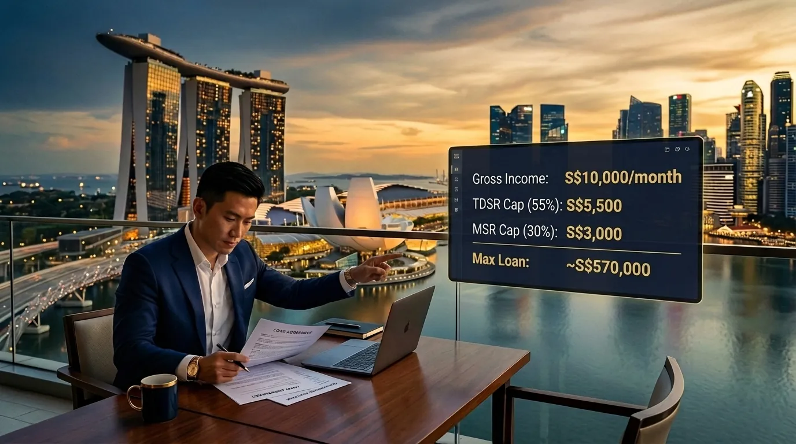

TDSR Private Property Singapore: What Buyers Must Know in 2026
Buying a private condo or landed home in Singapore? MSR does not touch you. The 55% TDSR cap and the MAS 4.00% p.a. stress floor do. Here is exactly how banks calculate your maximum loan in April 2026, where most buyers leave money on the table, and the one credit-card rule almost everyone forgets.
- The one rule that sets private property apart: no MSR
- How TDSR is actually calculated
- The credit-card trap (and other TDSR killers)
- Joint borrowers and the IWAA tenure rule
- LTV: the other ceiling
- Worked example: S$15,000 income, S$2M condo
- ABSD: the cash number TDSR cannot help with
- What to do before you sign the OTP
- Common questions
The One Rule That Sets Private Property Apart: No MSR
If you have only ever bought an HDB flat before, the most useful thing to learn first is what does not apply. The 30% Mortgage Servicing Ratio (MSR) is an HDB and Executive Condominium rule. It does not apply to private condominiums, walk-ups, or landed homes financed with a bank loan.
For private property, only one ratio matters: the Total Debt Servicing Ratio (TDSR), capped at 55% of gross monthly income. That single difference is why a household earning S$15,000 a month can often borrow more for a private condo than for an HDB flat of similar value. Private buyers get the extra 25 percentage points of headroom (55% TDSR vs 30% MSR); HDB buyers do not.
How TDSR Is Actually Calculated
The arithmetic is simple. What trips people up is the assessment rate. Banks cannot use the headline rate on your loan package. They have to size the qualifying instalment on the higher of the contractual rate or 4.00% p.a., per MAS TDSR rules.
In April 2026, fixed packages start from 1.40% p.a. and SORA-linked loans typically deliver an effective 1.65% to 1.85% p.a. (see our live current Singapore home loan rates). Every one of those sits below the 4% floor, so the floor wins. What you actually pay each month is one number. The number the bank uses to qualify you is higher. The full mechanics are in our companion piece on the MAS 4% stress test.
Look at what happened there. The buyer qualifies for an instalment of S$5,100, but their actual outflow at 1.65% is only S$3,770. That S$1,330 monthly gap is the cushion the stress test is meant to build in. And notice the credit-card line: it quietly shaved S$600 off the headroom. Most buyers forget about it entirely.
The Credit-Card Trap (And Other TDSR Killers)
Private property buyers tend to be higher earners with multiple credit cards, a car, maybe a renovation loan left over from a previous home. Every one of those bites into your TDSR before the new mortgage even enters the picture.
Every existing obligation consumes TDSR headroom before the new mortgage is added. Credit-card balances are counted at a 3% monthly factor regardless of whether you clear the bill in full each cycle.
- Credit cards count at 3% of the outstanding statement balance as a monthly debt, even if you clear the bill in full. A S$50,000 balance costs you S$1,500/month of TDSR room.
- Car loans count at the full monthly instalment until the loan is fully discharged.
- Personal, education and renovation loans count at the full monthly instalment, however short the tail is.
- Existing property loans count at the full instalment on every outstanding home loan you co-borrow on or guarantee.
- Guarantor positions matter too: banks may include a share of any loan you have guaranteed for a parent, sibling or partner.
Watch out for the variable-income haircut. Bonus, commission, director's fee and rental income only count at 70% for TDSR. So a S$10,000/month commission earner is assessed on S$7,000, not S$10,000. Applying for a home loan as a self-employed borrower means getting assessed on a two-year NOA average, again after the 30% haircut. Run the numbers with our TDSR/MSR affordability calculator before you book a viewing.
Joint Borrowers and the IWAA Tenure Rule
When two or more people borrow together, banks set the maximum loan tenure using the Income-Weighted Average Age (IWAA) of all borrowers. A 35-year-old earning S$10,000 borrowing with a 60-year-old earning S$5,000 has an IWAA of (35 × 10/15) + (60 × 5/15) = 43.3 years.
Maximum tenure for a private property bank loan is 35 years. But two thresholds cut into your LTV. Any tenure beyond 30 years, or one that runs past the youngest borrower's age 65, drops the LTV by 5 percentage points (from 75% down to 55% on the first property). Adding a young, lower-earning co-borrower does not always help, because it is the income weighting that decides whether you cross that threshold. This is one reason couples often look at decoupling before an upgrade.
LTV: The Other Ceiling
Even if your TDSR allows a larger loan, the Loan-to-Value (LTV) cap sets an absolute maximum on the loan as a percentage of the lower of purchase price or valuation.
- On a first property with no outstanding home loan, you get 75% LTV. The 25% down payment includes at least 5% in cash.
- On a second property, LTV drops to 45%. The down payment is 55%, with a minimum 25% in cash.
- On a third or subsequent property, LTV is 35%. The down payment is 65%, with a minimum 25% in cash.
- Stretch the tenure beyond 30 years or past age 65 and each of those LTV tiers drops by another 5 percentage points.
HDB upgraders need to think about timing. If you are still on the title of the HDB flat when the Option to Purchase on the private property is exercised, the bank treats the new loan as a second-property loan. That means 45% LTV, not 75%. You have three standard ways round it: sell the HDB first, line up a simultaneous completion, or decouple ownership. None of these work as a last-minute fix. The sequence is what matters.
Worked Example: S$15,000 Income, S$2M Condo

At a 4% stress floor, the qualifying instalment is roughly 60% higher than the actual outflow at a 1.65% loan rate. On a S$2M property, that gap can swing the qualifying loan by S$300,000+.
Take a Singapore Citizen couple, primary borrower 38, co-borrower 36, joint gross income S$15,000, no existing debts, looking at a S$2,000,000 first private property:
For this couple, LTV is what limits them, not TDSR. Their TDSR still has another S$220,000 of room. But add a single S$80,000 car loan at S$1,400/month and TDSR becomes the binding constraint, dragging the qualifying loan below S$1.45M. One car loan, and the ceiling moves. That is the swing most buyers under-estimate.
ABSD: The Cash Number TDSR Cannot Help With
TDSR decides how much you can borrow. Additional Buyer's Stamp Duty (ABSD) decides how much cash you need on the table. You cannot finance ABSD. It has to be settled in cash within 14 days of the Sale & Purchase Agreement. See how couples legally avoid ABSD on a second property through genuine decoupling.
- Singapore Citizen, 1st property: 0% ABSD
- Singapore Citizen, 2nd: 20% ABSD
- Singapore Citizen, 3rd or more: 30% ABSD
- PR, 1st / 2nd / 3rd: 5% / 30% / 35% ABSD
- Foreigner, any property: 60% ABSD
On a S$2M second property bought by a Singapore Citizen, ABSD alone is S$400,000 in cash. That sits on top of the 25% minimum cash down payment for a second-property LTV of 45%. Buyer's Stamp Duty (BSD) on the same property adds roughly S$64,600 more. Build these into the upgrade plan from the start. They are not afterthoughts.
What To Do Before You Sign the OTP
An In-Principle Approval (IPA) is the one document that turns theory into a confirmed loan number. It is free, valid for 30 days, and built on your real income documents, real debts and a real property quantum, all stress-tested at 4%. Run a sanity check first with the TDSR/MSR affordability calculator, then collect IPAs from at least three lenders so you can compare quantum and rate side by side.
If you are weighing fixed versus floating, our fixed vs SORA comparison walks through the trade-off at 2026 spreads. Already a private owner and thinking about timing your next move? Have a look at when to refinance. TDSR gets reassessed at every refinancing event, so the mechanics in this article apply there too.
Further Reading
- Singapore Mortgage Free Report: Dan's complete TDSR + MSR + LTV/IWAA stack with your numbers worked out, alongside a 16-bank rate comparison and the upfront-cost breakdown (BSD/ABSD/legal) in one downloadable PDF
- MAS 4% stress test: how the floor rate is derived and applied across every Singapore home loan
- best loan for condo / private property: package selection for first-time private buyers
- using CPF OA for property: OA withdrawal limits, BRS and accrued interest mechanics
- HDB loan vs bank loan: the MSR/TDSR contrast spelled out for HDB buyers
- equity / cash-out loan: for owners with paid-down private property looking to recycle capital
- MAS: TDSR for Property Loans: the official rules, methodology and worked examples
- MAS: SORA: the benchmark behind floating-rate packages
Frequently Asked Questions
No. The 30% Mortgage Servicing Ratio (MSR) applies only to HDB flats and Executive Condominiums financed with a bank loan. For private condominiums and landed property, only the 55% TDSR cap applies.
TDSR is capped at 55% of gross monthly income. All monthly debt obligations (the new mortgage plus car loans, personal loans, credit-card factor, and any other property loans) must fit inside that ceiling, with the new mortgage assessed at the MAS 4.00% p.a. stress floor.
With no existing debts, the 55% TDSR ceiling gives roughly S$8,250 per month. At the MAS 4% stress rate over a 30-year tenure, that supports a loan of about S$1.72 million. The 75% LTV cap on a first property may be the binding constraint instead.
MAS requires banks to count 3% of the outstanding credit-card balance as a monthly obligation, even if you pay in full each month. A S$30,000 balance therefore eats S$900 of TDSR headroom — a common reason buyers under-estimate their borrowing limit.
Bonus, commission and rental income are subject to a 30% haircut — only 70% counts toward eligible gross income. Self-employed buyers are typically assessed on a two-year average of NOA filings, also after the haircut.
Banks use the Income-Weighted Average Age (IWAA) of all borrowers to set tenure. Maximum tenure for a private property bank loan is 35 years, but tenure beyond age 65 or longer than 30 years triggers a 5-percentage-point LTV cut.
Talk to a Mortgage Broker
Run your TDSR with Dan Ler — Nexus Mortgage SG
I run your TDSR, ABSD and LTV across 16+ Singapore lenders, secure parallel IPAs, and lay out a single comparison sheet before you commit to an OTP. Free to you — the bank pays Nexus on disbursement.
WhatsApp Dan — Free TDSR Assessment →Run the numbers first: TDSR/MSR affordability calculator with built-in 2026 4% stress logic.

About the author — Dan Ler has advised on Singapore home loans since 2017 at Nexus Mortgage SG, an independent brokerage comparing 16+ MAS-regulated lenders. Nexus is paid by the bank on disbursement, so there is no cost to the borrower.
Nexus Mortgage SG is an independent Singapore mortgage brokerage. This article is general information, not financial advice. Figures reflect April 2026 market conditions and MAS rules in force at the time of writing; both are subject to change. Verify current rules at MAS: TDSR for Property Loans and IRAS: ABSD before transacting.